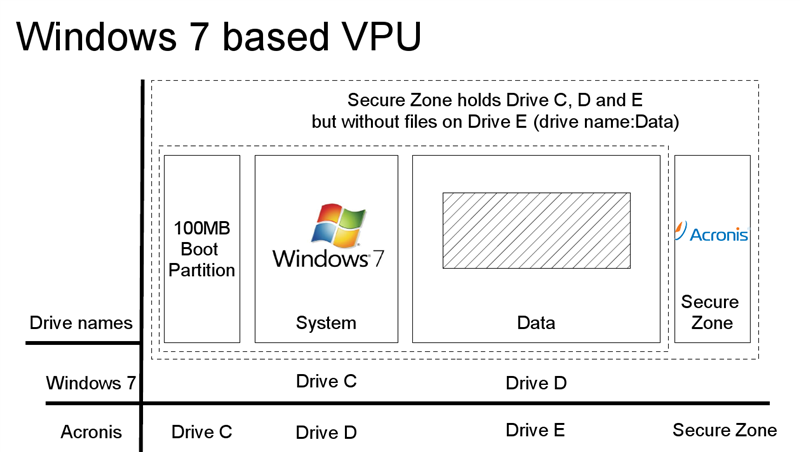

MA Lighting keeps the factory settings of the Windows operating system with all factory default settings on a hidden part of the hard disk of the VPU. This is useful for you to recall this data whenever you encounter problems in the VPU software that cannot be solved by a software update. You can use Acronis as well to store and recover your own backups.
Your images can be stored on Drive D of the internal hard disk or on any external USB storage device that holds enough space to store your data. You should start Acronis from the Acronis Startup Recovery Manager. This means that you should restart the machine and press F11 (or F12 on VPUs > #87) during boot.
In Windows 7 (VPUs with serial numbers from #87) the partitioning of the harddisk changed. This is shown in the following image:
